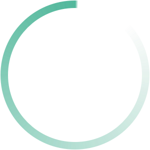
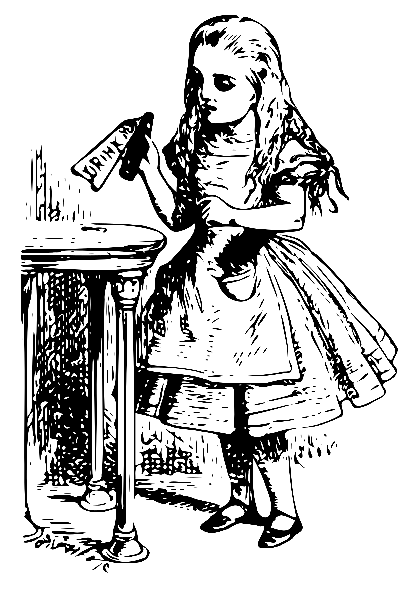
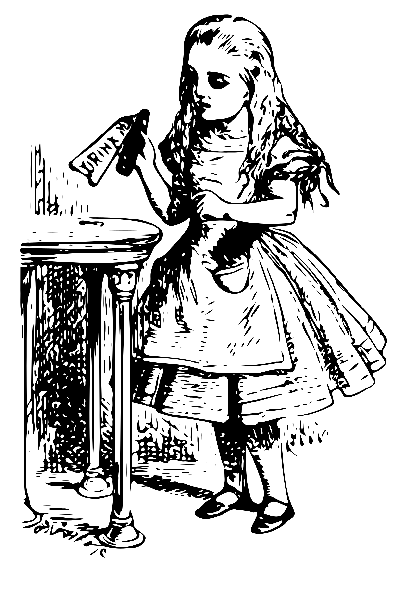

- Самые сомнительные события - это именно те, которые наблюдались наибольшим числом людей.
Гюстав Лебон
- Если разом осушить бутылку с пометкой «яд», то рано или поздно, почти наверняка, почувствуешь легкое недомогание.
Льюис Кэрролл "Алиса в стране чудес"
- Нельзя поверить в невозможное!
- Просто у тебя мало опыта, - заметила Королева. – В твоем возрасте я уделяла этому полчаса каждый день! В иные дни я успевала поверить в десяток невозможностей до завтрака!
Льюис Кэрролл "Алиса в Зазеркалье"
- Не все ли равно, о чем спрашивать, если ответа все равно не получишь, правда?
Льюис Кэрролл "Алиса в стране чудес"
- У солдата, которого ведут под конвоем, всегда больше опыта, чем у тех, кто его караулит
Ярослав Гашек "Похождения бравого солдата Швейка"
- Lisp — это не язык, а строительный материал.
Алан Кей

 
